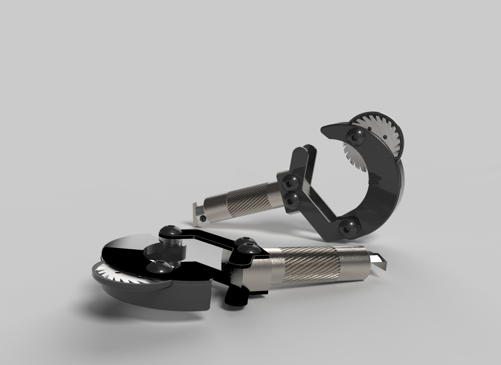
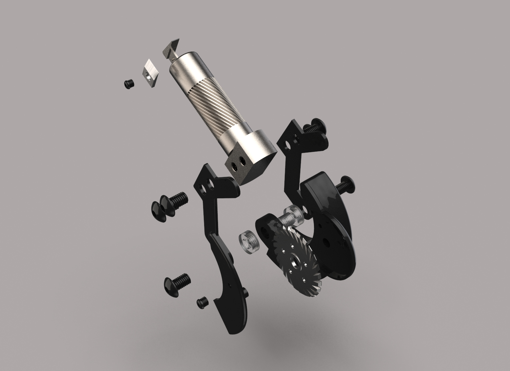
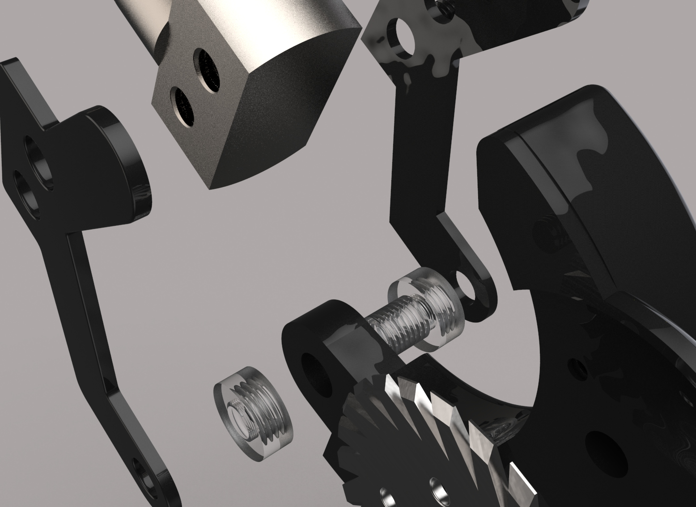

Major project - 2018
ArmourSlice
- Product Design
- Graphic Design
- Prototyping
- User Interviews
Major project - 2018
TLDR: Working with C.K tools I was taked with improving their current line of armourslice SWA cable strippers.
The design process followed the double diamond, the biggest focus for this project was providing value to users as well as making sure that the final output was feasable for manufacture.

I created a range of concepts using a refined success criteria. Through questionnaires, interviews and testing I refined the idea to maximise usabilty.
The goal was to improve the .
The research, specification and final concept were taken for development by the C.K product development team.
 View my repository for this website on Github.